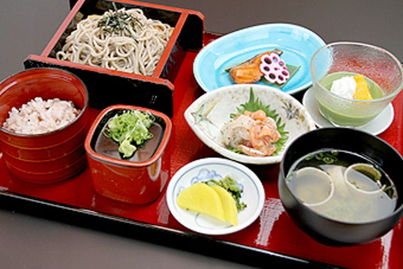

TOPページ
小菅村って
どんなころ？
小菅村民の方へ
季節の特集
過ごし方
遊ぶ
食べる
泊まる
アクセス
こ、こすげぇーについて
2021/02/18
小菅姓発祥の地。歴史を感じる「小菅城址」、天神山の史跡をめぐって。
2021/02/12
手前みそ作りセット【オンラインワークショップ付】の販売を始めました。テストテストテスト
2021/02/12
田舎での新しい働き方！小菅村のテレワーク実践者にインタビュー！テストテストテスト
過去のお知らせ
小菅村民の方
小菅村について知りたい方
小菅村に訪れてみたい方
小菅村ファンの方
小菅村の暮らし、観光、特産品など様々なテーマで記事を掲載
暮らし
観光
特産品
過去の記事一覧
暮らし
観光
特産品
他カテゴリー
暮らし
観光
特産品
他カテゴリー
暮らし
観光
特産品
他カテゴリー
暮らし
観光
特産品
探したい情報のキーワードを入力してください。
小菅村の観光スポット、食事処、宿泊施設等の情報を掲載

「こ、こすげぇー」の公式SNSアカウント。旬な情報をいち早く発信。
Tweets by ko_kosuge